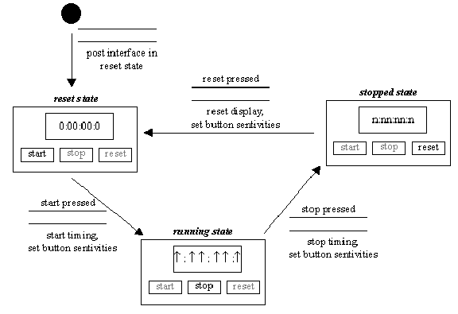
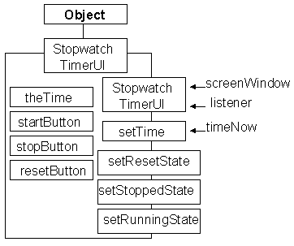
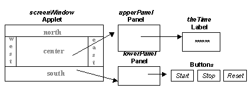

The StopwatchTimer artefact develops the GraphicalTimerEventSourceDemo artefact by adding three buttons onto the interface that allow the user to start the stopwatch, stop the stopwatch and to reset the stopwatch. There are some logical considerations in this description:
a stopwatch first becomes visible to the user
in its reset state.
a stopwatch can only be started when it is in its reset state.
a stopwatch can only be stopped when it has been started.
a stopwatch can only be reset when it has been stopped.
These considerations can be more precisely described in a State Transition Diagram, as follows.

The visible part of the artefact will be supplied by an instance of the StopwatchTimerUI class, whose class diagram is as follows.

The class contains a Label instance, called theTime, and a method to set its value, called setTime(), as before. It also contains three Buttons and the three remaining methods set the sensitivities of the Buttons as required by the named state. The constructor requires not only the identiy of the screenWindow to show the interface in, but also the identity of the listener to send the events from its Buttons to.
The implementation of the class, as far as the start of its constructor, is as follows.
0008 import java.awt.*;
0009 import java.applet.*;
0010 import java.awt.event.*;
0011
0012 public class StopwatchUI extends Object {
0013
0014 private Label theTime = null;
0015 private Button startButton = null;
0016 private Button stopButton = null;
0017 private Button resetButton = null;
0018 private Panel upperPanel = null;
0019 private Panel lowerPanel = null;
The first four declarations are the four instance attributes shown on the class diagram, the remining two, both Panels, are needed to obtain the required layout, as will be explained. The constructor commences as follows.
0022 public StopwatchUI( Applet screenWindow,
0023 ActionListener itsListener) {
0024
0025 super();
0026 upperPanel = new Panel();
0027 lowerPanel = new Panel();
0028
0029 theTime = new Label( "*****");
0030
0031 startButton = new Button( "start");
0032 startButton.setActionCommand( "start");
0033 startButton.addActionListener( itsListener);
0034
0035 resetButton = new Button( "reset");
0036 resetButton.setActionCommand( "reset");
0037 resetButton.addActionListener( itsListener);
0038
0039 stopButton = new Button( "stop");
0040 stopButton.setActionCommand( "stop");
0041 stopButton.addActionListener( itsListener);
This part of the constructor first constructs the two Panels and then theTime Label as before. Each Button is then constructed in turn, the argument to the constructor is the text that the button is to display, the Button's actionCommand attribute will be copied into the ActionEvents which are generated by the Button when the user presses it. These events are dispatched to the itsListener attribute which is passed as an argument to the constructor.
The remaining parts of the constructor assemble the interface, as follows.
0044 upperPanel.add( theTimer); 0045 lowerPanel.add( startButton); 0046 lowerPanel.add( stopButton); 0047 lowerPanel.add( resetButton); 0048 0049 screenWindow.setLayout( new BorderLayout()); 0050 screenWindow.add( upperPanel, "North"); 0051 screenWindow.add( lowerPanel, "South"); 0052 } // End StopwatchUI constructor.
This part of the code provides the geometry relationships shown in this diagram.

The setTime() method is unchanged from the previous example.
0054 public void setTime( String timeNow) {
0055 theTime.setText( timeNow);
0056 } // End setTime;
The setResetState() sets the three buttons sensitive or insensitive, as appropriate, by using their setEnabled() method. It also resets theTime to "*****".
0075 public void setResetState(){
0076 startButton.setEnabled( true);
0077 stopButton.setEnabled( false);
0078 resetButton.setEnabled( false);
0079 theTime.setText( "*****");
0080 } // End setResetState.
The two remaining methods, setRunningState() and setStoppedState() are similar, but do not need to change the value shown on theTime.
The Stopwatch class commences as follows.
0011 import java.awt.*;
0012 import java.applet.*;
0013 import java.awt.event.*;
0014
0015 public class Stopwatch extends Applet
0016 implements ActionListener {
0017
0018 private static final int INITIAL = 0;
0019 private static final int RESET = 1;
0020 private static final int RUNNING = 2;
0021 private static final int STOPPED = 3;
0022 private int theState = INITIAL;
0023
0024 private TimerEventSource aTimer = null;
0025 private StopwatchUI anInterface = null;
The theState variable, declared on line 0022, will be used to record the state of the interface, as defined on the STD. The four manifest values are provided to support it. Lines 0024 and 0025 then declare the two other components of the artefact. The init() method is implements as follows.
0027 public void init() {
0028
0029 aTimer = new TimerEventSource();
0030 anInterface = new StopwatchUI( this, this);
0031 try {
0032 aTimer.addActionListener( this);
0033 } catch ( java.util.TooManyListenersException exception) {
0034 // do nothing
0035 } // End try/catch
0036 anInterface.setResetState();
0037 theState = RESET;
0038 aTimer.start();
0039 } // End init.
This method does not differ signifiantly from that of the GraphicalTimerEventSourceDemo artefact. On line 0030 this Stopwatch instance is specified as both the screenWindow and the listener arguments to the StopwatchUI constructor. The actionPerformed() method will receive events from both the aTimer instance and the three Buttons on the StopwatchUI instance.
0042 public synchronized void actionPerformed( ActionEvent event) {
0043
0044 String theCommand = event.getActionCommand();
0045
0046 if ( theCommand.equals( "start")) {
0047 aTimer.resetTime();
0048 anInterface.setRunningState();
0049 theState = RUNNING;
0050
0051 } else if ( theCommand.equals( "stop")) {
0052 anInterface.setStoppedState();
0053 theState = STOPPED;
0054
0055 } else if ( theCommand.equals( "reset")) {
0056 anInterface.setResetState();
0057 theState = RESET;
0058
0059 } else if ( theState == RUNNING) {
0060 anInterface.setTime( theCommand);
0061 } // End if.
0062 } // End actionPerformed.
The actionCommand attribute of the event contains the either the actionCommand attribute of the Button that dispatched it, or the number of tenths of a second if it was dispatched from the TimerEventSource instance. The actionPerformed() method is a four way selelction, taking the apropriate steps depending upon which Object dispatched the event.